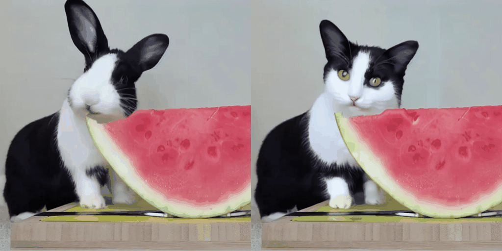
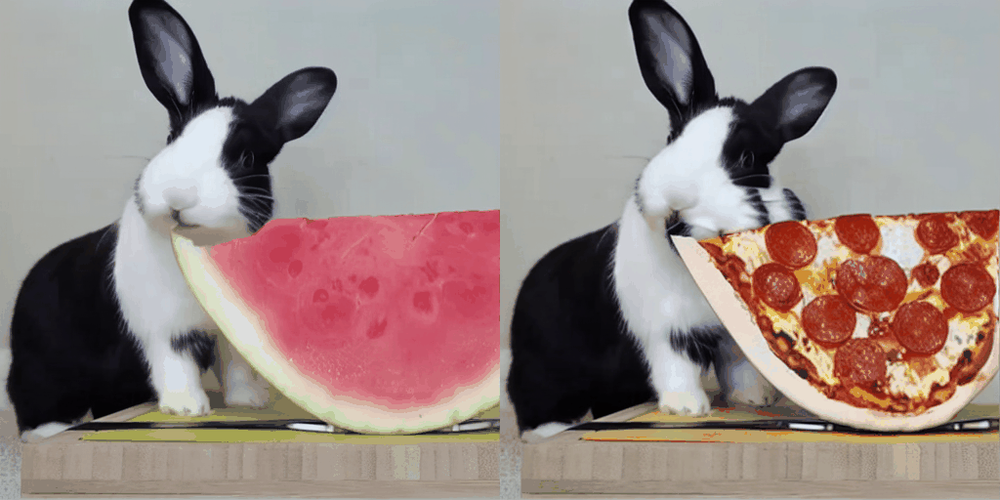
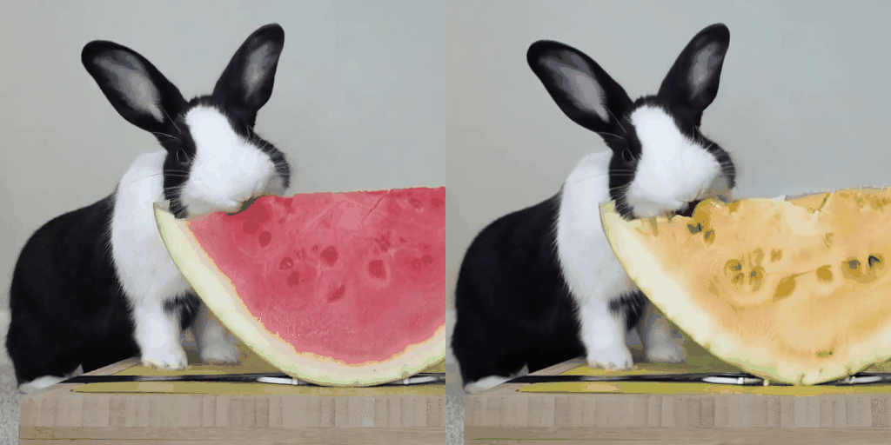
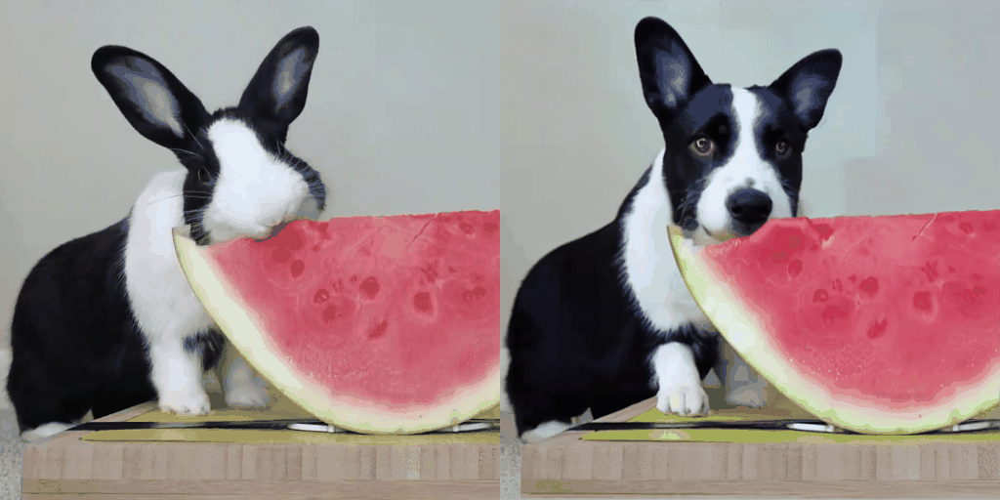
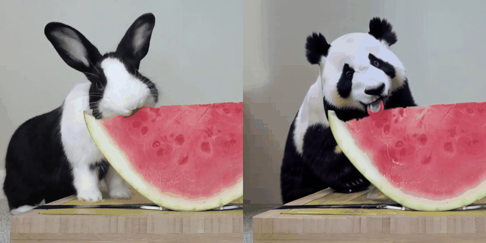
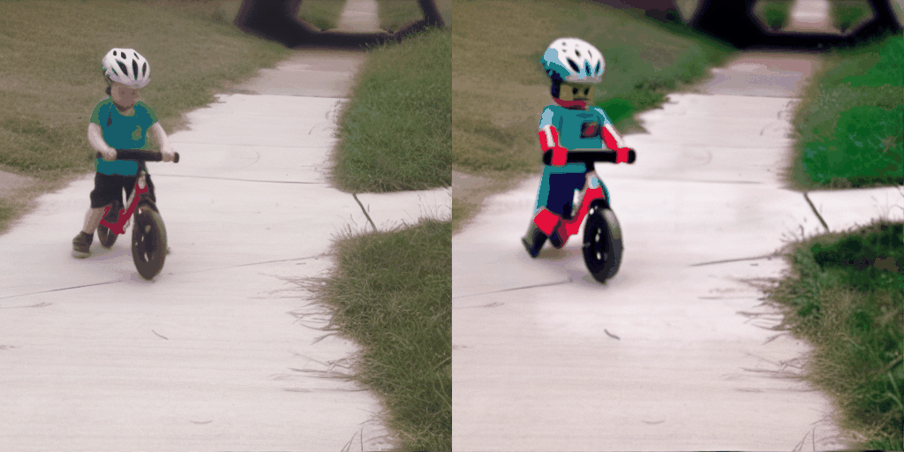
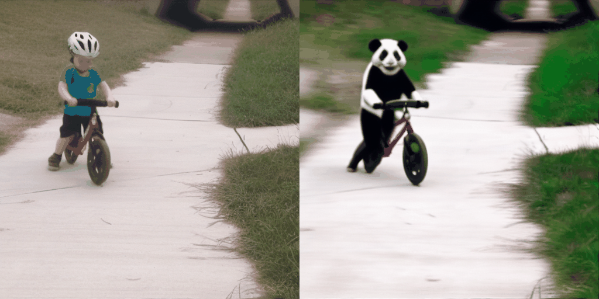
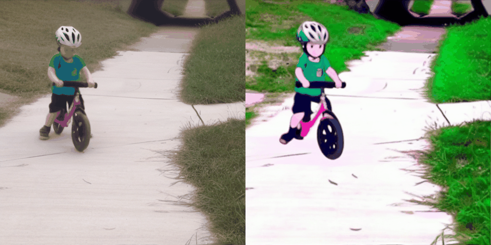
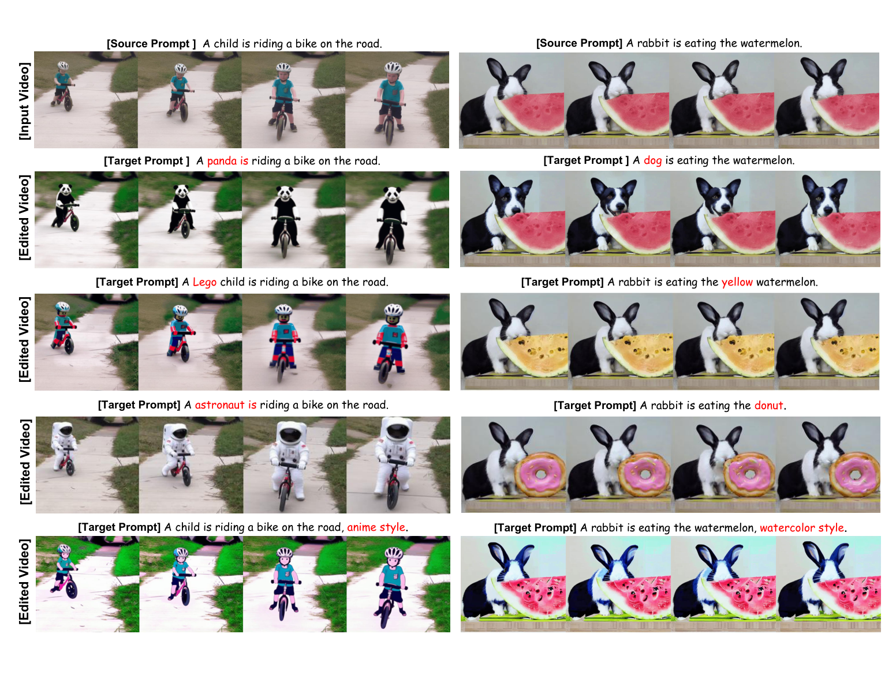
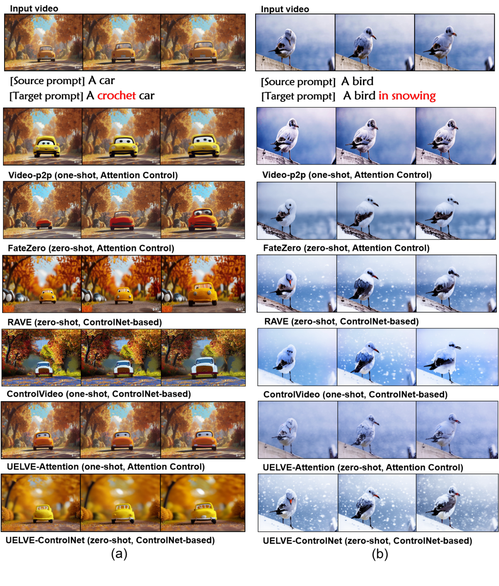

Text-guided video editing aims to transform a source video according to a target text prompt while preserving desired visual content and temporal coherence. Despite recent progress, existing approaches often target specific editing scenarios (e.g., zero-shot or one-shot, local or global editing), struggle to process long videos due to memory and computational constraints. In this paper, we propose UELVE, an Large Language Model-driven Unified framework for Efficient Long-Video Editing based on pre-trained text-to-image diffusion models. UELVE first exploits the reasoning capability of an LLM to automatically analyze the source and target prompts, enabling adaptive decisions on editing strategies. To support long-form video editing, we organize video frames into grids and perform sequential grid-based diffusion, where grid self-attention explicitly ensures short-term consistency among neighboring frames. Furthermore, a simple yet effective grid sliding mechanism is introduced to establish inter-grid interactions, maintaining long-term temporal consistency. In addition, UELVE naturally supports multi-GPU parallel inference with only minimal inter-GPU communication, substantially improving editing efficiency. Extensive experiments on a wide range of video editing scenarios demonstrate that UELVE consistently achieves superior editing quality, strong temporal consistency, and significantly improved efficiency compared with state-of-the-art methods.

Figure 1: UELVE is an efficient long-video editing method that leverages LLM to make decisions on model adaptions according to specific editing types, implements grid diffusion on a pre-trained Text-to-Image model to maintain short-term and long-term consistencies, and enhances the efficiency by multi-GPU data parallel computation. It is applicable to diverse editing tasks, including object/background replacement, local editing of attributes (style, color, shape), global style transformation and even motion editing.

Figure 6: Qualitative comparison with baseline methods. Compared with one-shot methods (Video-p2p, FateZero) and zero-shot methods (RAVE, ControlVideo), UELVE (Attention and ControlNet variants) achieves better editing fidelity and temporal consistency. Quantitative comparisons and ablation studies are provided in the paper.
@article{liu2026uelve,
author = {Liu, Deyin and He, Li and Li, Zhan and Liang, Chengwu and Li, Xiaoming},
title = {LLM-Driven Unified Framework with Grid Diffusion for Efficient Long Video Editing},
journal = {arXiv preprint arXiv:XXXX.XXXXX},
year = {2026},
}